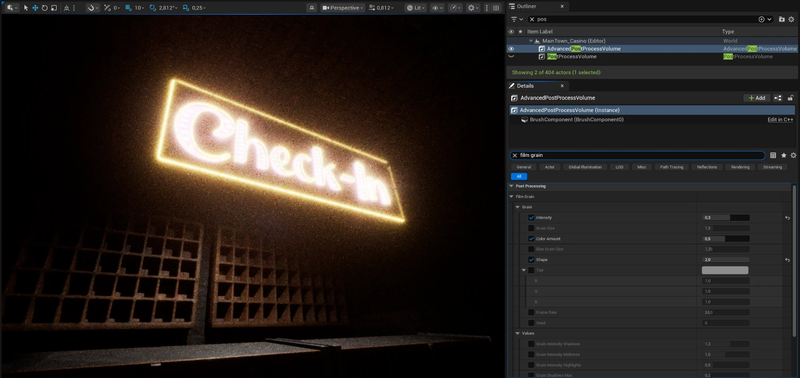
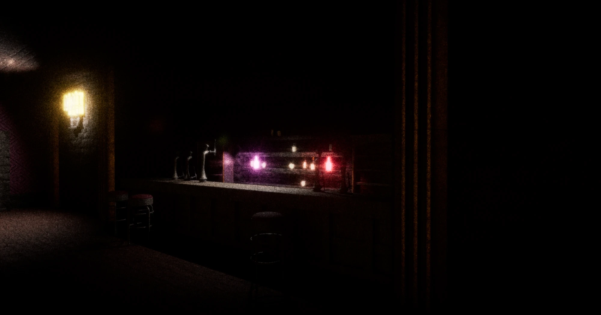

Effects
Film grain
Film grain is the fine, noisy texture in film footage. It comes from the tiny light-sensitive particles in the film. In a game it makes a scene feel as if it was filmed.
HLSLens makes the grain on the GPU, so you don't need a texture. It changes at film speed, 24 times a second by default, no matter how fast your game runs. If you'd rather use a scan of real film (film grain texture), you can do that too.
- Where to find it
- Film Grain on the volume, split into Grain, Values and Texture
- Default
- Off. Raise Intensity above 0 to turn it on.
- Cost
- Very low


How it works
The grain is added before the tonemapper, together with bloom and halation. This has a few nice side effects. Black stays black, the grain never lifts the dark areas. The tonemapper squeezes the grain in the highlights afterward, like on a film print. It also sits on top of the bloom and halation glow instead of under it. And it stays the same size at 1080p and at 4K.
The more expensive grain pattern is built once and then just moved around, which is why it's so cheap. Only changing Seed, Grain Size, Blue Grain Size or Shape builds a new one, so everything else is safe to animate during gameplay.
Grain
| Setting | What it does | Default | Range |
|---|---|---|---|
| Intensity | Overall strength. 0 turns the grain off. |
0 | 0 to 0.5 |
| Grain Size | Size of the grain in pixels. Scales with the resolution. 0 is single-pixel noise. |
1.5 | 0 to 6 |
| Color Amount | 0 puts the same grain on every channel, so it looks black and white. 1 gives each channel its own grain. The strength stays the same either way. |
0.5 | 0 to 1 |
| Blue Grain Size | Size of the blue grain compared to Grain Size. Real film has different grain sizes per color. Needs Color Amount above 0. | 1.25 | 0.5 to 4 |
| Shape | 1 is normal grain. Above 1 gives sparse, spiky grain, below 1 flatter grain. The strength stays the same. |
1.0 | 0.5 to 2 |
| Tint | Multiplies the grain strength per color channel. | White | — |
| Frame Rate | How many times per second the grain changes. | 24 | 1 to 120 |
| Seed | Changes the grain pattern. | 0 | — |

Values: shadows, midtones and highlights
The grain doesn't have to be equally strong everywhere. Real film grain shows most in the shadows and midtones, and the defaults follow that.
| Setting | What it does | Default | Range |
|---|---|---|---|
| Grain Intensity Shadows | Grain strength in the dark areas. | 1.2 | 0 to 2 |
| Grain Intensity Midtones | Grain strength in the middle tones. | 1.0 | 0 to 2 |
| Grain Intensity Highlights | Grain strength in the bright areas. | 0.5 | 0 to 2 |
| Shadows Split (EV) | Where shadows turn into midtones, in stops from mid grey. | −2 | −6 to 2 |
| Highlights Split (EV) | Where midtones turn into highlights, in stops from mid grey. | 2 | −2 to 6 |
So by default anything more than two stops darker than mid grey counts as shadow, and anything more than two stops brighter counts as highlight.
Texture
Set a Grain Texture to use your own grain. Grain Size, Blue Grain Size and Shape are ignored then. Frame Rate, Seed, Tint, Color Amount and the Values settings still work.
Texture Scale (default 1) sets how many screen pixels one texel covers. At 1 it's one to one. Other values filter the texture, which lowers the grain contrast a little. A texture doesn't scale with resolution, so a scan that looks one way at 1080p looks finer at 4K.
The texture needs to be:
- RGB. The green channel doubles as the black and white grain.
- sRGB off, no mips and no compression. Compression adds blocky artifacts.
- Centered on mid grey. 0.5 means no change, darker values darken the image and brighter values brighten it.
- Seamless, because it's tiled across the screen.
Virtual textures don't work with post-processing, you will get a warning.